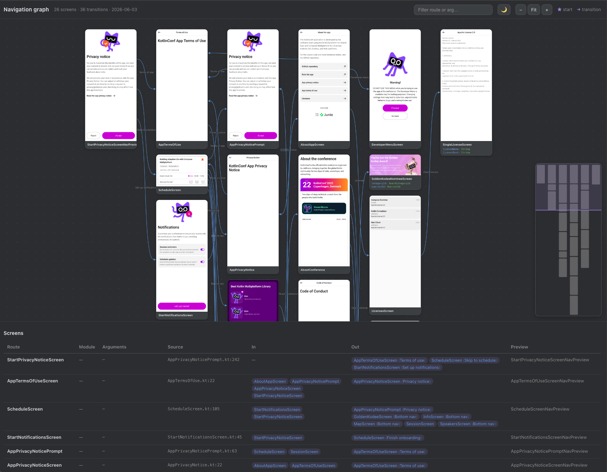
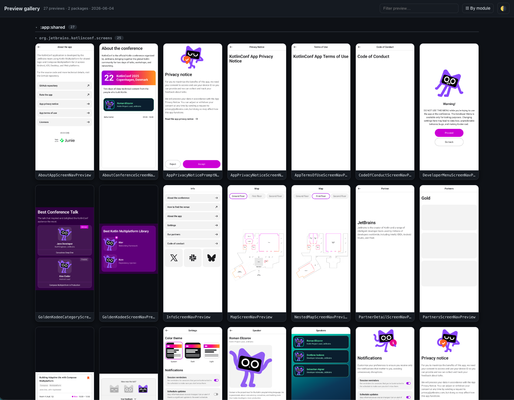

Exporting¶
Beyond the IDE tool window, the Gradle plugin can render your navigation graph and your preview gallery to standalone files you can share in docs, pull requests, and design reviews. Each export comes in two flavors: an interactive HTML page and a static PNG. All of them are produced device free, so they don't need the IDE plugin or a connected device.
| Task | Output | Best for |
|---|---|---|
exportNavGraphHtml |
build/navgraph/nav-graph.html |
a self contained, interactive flow graph |
exportNavGraphImage |
build/navgraph/nav-graph.png |
a static snapshot for READMEs, PRs, slides |
exportPreviewGalleryHtml |
build/navgallery/preview-gallery.html |
a self contained gallery of every @Preview |
exportPreviewGalleryImage |
build/navgallery/preview-gallery.png |
a single contact sheet of every @Preview |
Generated on demand
Every export task depends on the same extraction pipeline as generateNavGraph (or generatePreviewGallery), so a single invocation extracts the graph, renders the thumbnails, and writes the export. You never need a separate generate run first. When cross module aggregation is on (the default), the export covers every dependency module's graph merged with this module's own, so exporting from :app captures the whole app.
See real generated output¶
Curious what these artifacts look like on real apps? The nav-results/ directory contains committed exports from real-world projects (the KotlinConf app, Now in Android, and SimpMusic): full navigation graph PNG exports under nav-results/nav-graphs/ and preview galleries under nav-results/preview-gallery/.
exportNavGraphHtml¶
Renders a self contained, interactive flow graph as a single HTML file. Everything (layout, thumbnails, and interactivity) is inlined, so you can open the file directly in a browser or drop it into a static docs site with no server. The page lets you pan and zoom the flow map, filter by route and argument, and read a screens table listing every destination with its typed arguments, transitions, and source locations.
./gradlew :app:exportNavGraphHtml
The result is written to build/navgraph/nav-graph.html.

exportNavGraphImage¶
Renders a static image of the flow graph: a single PNG showing every node, its thumbnail, and the edges between screens. Ideal for embedding in a README or attaching to a pull request so reviewers can see the app's flow at a glance.
./gradlew :app:exportNavGraphImage
The result is written to build/navgraph/nav-graph.png.
Preview gallery exports¶
The same pipeline can render every @Preview in your project, not just the annotated screens, into a gallery grouped by module and package. Multipreview annotations are expanded and @PreviewParameter providers are honored. The generatePreviewGallery task renders the thumbnails into build/navgallery, and the two export tasks package them up:
./gradlew :app:generatePreviewGallery # render every @Preview into build/navgallery
./gradlew :app:exportPreviewGalleryHtml # build/navgallery/preview-gallery.html
./gradlew :app:exportPreviewGalleryImage # build/navgallery/preview-gallery.png
The HTML gallery is a self contained page you can browse or publish as a living design system overview; the image export is the same grid as a single PNG contact sheet.

On demand only
The gallery tasks are registered when navgraph { galleryEnabled.set(true) } (the default) but are never wired into generateNavGraph or check, so they cost nothing unless you run them. See Configuration.
Export options¶
The export tasks accept a few -P Gradle properties to tweak the output without touching your build script:
| Property | Applies to | Effect |
|---|---|---|
navgraph.export.device |
exportNavGraphHtml, exportNavGraphImage |
Frames every thumbnail in a WxH device frame (letterboxed), e.g. 1080x2400. Blank (the default) keeps each node at its rendered aspect. |
navgraph.export.out |
exportNavGraphHtml, exportNavGraphImage |
Redirects the output file to the given path. |
navgraph.export.scale |
exportNavGraphImage, exportPreviewGalleryImage |
Supersampling factor for crisp hi-DPI PNGs (default 2, clamped to 1..8). |
navgraph.gallery.out |
exportPreviewGalleryHtml, exportPreviewGalleryImage |
Redirects the gallery output file to the given path. |
For example, to export a hi-DPI PNG with phone framed thumbnails to a custom location:
./gradlew :app:exportNavGraphImage \
-Pnavgraph.export.device=1080x2400 \
-Pnavgraph.export.scale=3 \
-Pnavgraph.export.out=docs/nav-graph.png
Embedding in Docs¶
Because the outputs are plain files, you can publish them however you like. For a static snapshot in your README:

For an interactive version, host nav-graph.html alongside your other docs (for example, copy it into your docs/ directory before building your site) and link to it.
Keep exports fresh in CI
If you commit a rendered graph image to your repo, regenerate it in CI on changes so it doesn't drift from the real navigation. For enforcing that navigation hasn't changed (rather than only publishing a picture), use the committed .nav baseline with navCheck instead.